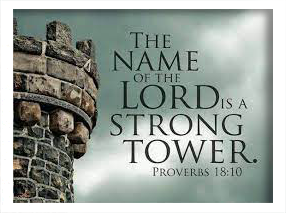

|  |
Migdal OZThe Name of YHVH is a Strong TowerAmsal 18:10(TB) Nama "TUHAN" adalah menara yang kuat, ke sanalah orang benar berlari dan ia menjadi selamat |
Sedikit informasi tentang saya, saya adalah seorang jemaat Tuhan biasa yang sangat mencintai Firman Tuhan seperti apa yang tertulis di dalam Alkitab dan sangat menentang pengajaran doktrin gereja yang tidak sesuai dengan apa yang tertulis.
Saya dibesarkan sebagai seorang Budhis dan mengenal Tuhan sejak awal 1990 an.
Gereja tempat saya bertumbuh dan dibaptis pertama kali adalah GBI Gajah Mada, kemudian saya beribadah di GTI Tiberias, GBI Empo, GBI PRJ dan terakhir di GBI Gilgal.
| Year | Period | The Even |
|---|---|---|
| 0-4000 (0AD) | From Creation to Jesus | The promise of the coming Messiach |
| 0AD-now | From Jesus untill now | Grace Period |
| Now-1000 Years to come | Now untill The Kingdom of God | New Earth |
| Target Bible Knowledge | ⭐⭐⭐⭐⭐ |
| Most Pastors Bible Knowledge | ⭐⭐ |
| Most People Bible Knowledge | ⭐ |